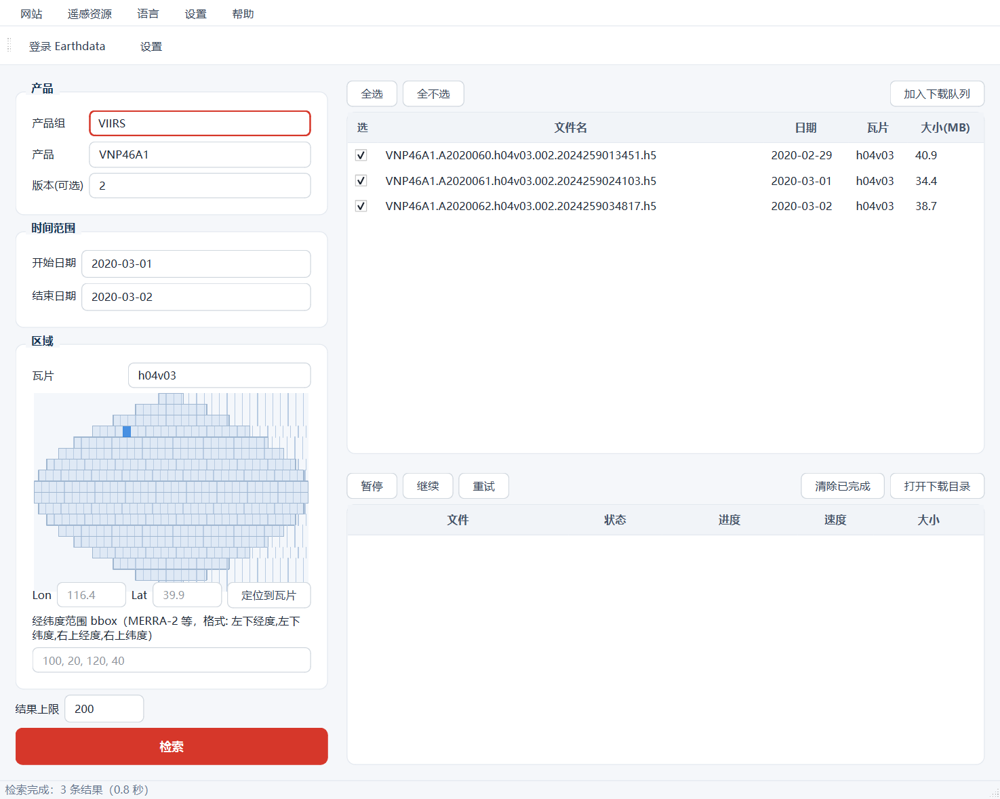

Introducing D3L Tool of NASA Satellite 2.0
D3L Tool of NASA Satellite is a free software tool to search and download NASA satellite data — the whole workflow inside one app.
v2.0 is a complete rewrite on top of NASA's official earthaccess library and the CMR search service: no more manual order creation on the NASA website, and no more browser automation. Pick a product (MODIS / VIIRS / MERRA-2), a date range and click tiles on the built-in sinusoidal tile map (or type coordinates) — then search, tick and download. Resumable chunked downloads, parallel queue, automatic retries, size validation, bilingual UI (中文/English), and it runs on Windows, macOS and Linux.
History: D3L Tool was created by Mr. Dai in 2018 (v1.0), when the LAADS FTP servers were shut down and the official Python scripts were hard for non-programmers — v1 automated order downloads through browser automation. Eight years later, v2.0 rebuilds it on a modern stack.
Main Interface (v2.0)

Search panel on the left (product / time / clickable 36×18 tile map), search results and the live download queue on the right.
What's new in v2.0
- Built-in search: by product, date, tile (h##v##) or bounding box — no manual orders on the NASA site
- Coverage: MODIS, VIIRS (LAADS DAAC) and MERRA-2 (GES DISC); any CMR short_name works too
- Robust downloads: multi-threaded queue, chunked progress, HTTP resume, auto-retry, size validation
- Bilingual: one-click 中文 / English switch
- Cross-platform: Windows exe, macOS .app, Linux binary (CI builds), or simply
pip install d3ltool - Proxy support for complex network environments
Getting Started
On Windows just double-click D3LToolNASA.exe (single file, no Python needed):
sign in with your free NASA Earthdata account under "Settings"
(search works without login; downloads need it), pick a product and area, hit Search, tick files and add them
to the download queue.
CLI users: pip install d3ltool, then
d3ltool search VNP46A1 --start 2020-03-01 --end 2020-03-31 --tile h04v03.
See the documentation.
Dependencies
D3L Tool of NASA Satellite is released under a MIT license. It builds on several open source libraries and source-code files. Below is the list of the key projects that we would like to acknowledge.
PySide6 (Qt for Python) Cross-Platform GUI Library, version 6. License: LGPL-3.0 License. Authors: Qt Company and many. Links: https://doc.qt.io/qtforpython/
earthaccess — NASA Earthdata access library, version 0.19. Authors: NASA openscaping community etc. License: MIT License. Links: https://earthaccess.readthedocs.io/
requests Library. Authors: Many. License: Apache 2.0 License. Links: https://requests.readthedocs.io/
Pyinstaller Library. Authors: Many. License: GPL license. Links: http://www.pyinstaller.org/
v1.0 (2018, browser automation) was built on tkinter, selenium and Tristan Quaife's laads-data-download.py; it is no longer maintained and stays in the repository history.
Acknowledgments
The development of D3L Tool of NASA Satellite has been supported by Tristan Quaife, MorvanZhou and NASA. Special thanks for GeoDa.
Support
See the documentation for v2.0 usage; issues are welcome on GitHub Issues.
License
D3L Tool of NASA Satellite uses a MIT License.
Contact
Questions? Contact us.